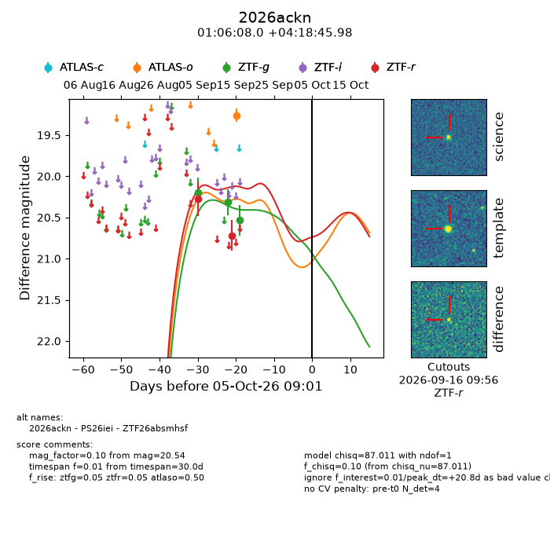
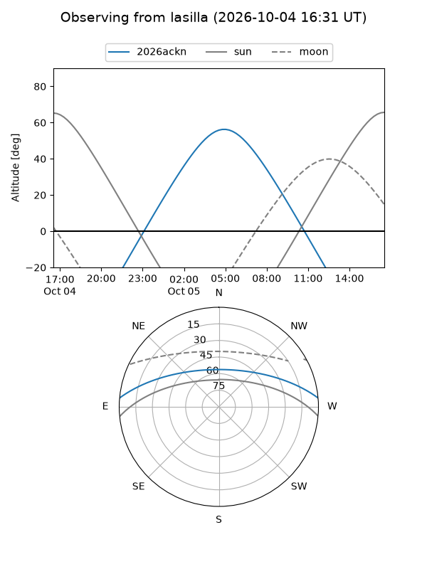
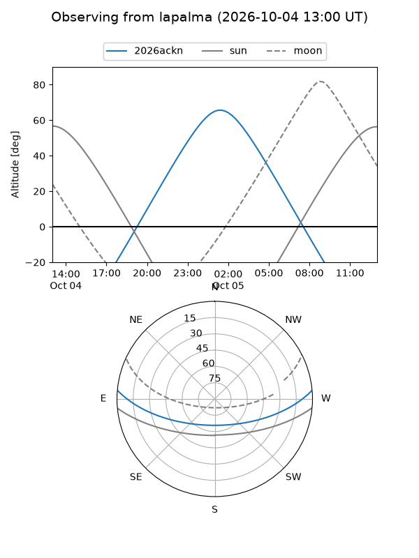
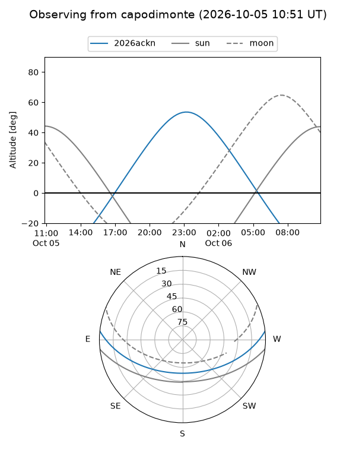
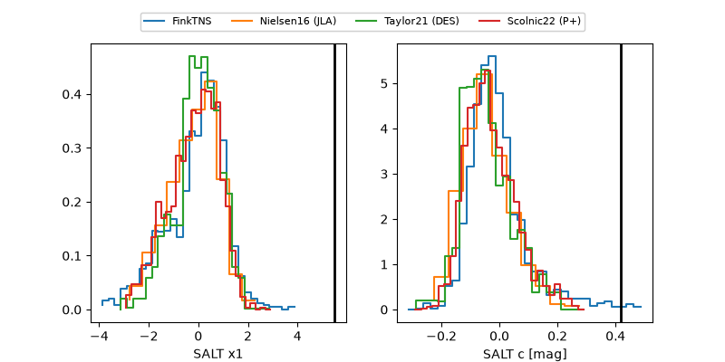

2026ackn
Target 2026ackn at 2026-10-05 09:03
Aliases and brokers:
FINK-ZTF: ztf.fink-portal.org/ZTF26absmhsf
Lasair-ZTF: lasair-ztf.lsst.ac.uk/objects/ZTF26absmhsf
ALeRCE-ZTF: alerce.online/object/ZTF26absmhsf
YSE-PZ: ziggy.ucolick.org/yse/transient_detail/2026ackn
TNS name: wis-tns.org/object/2026ackn
Direct TNS query: direct search
alt names
ZTF26absmhsf (ztf,fink_ztf)
2026ackn (tns,yse)
PS26iei (panstarrs)
Coordinates:
equatorial (ra, dec) = 16.5333,+4.31277
equatorial (HMS+DMS) = 01:06:08.00,+04:18:45.98
galactic (l, b) = (129.9279,-58.35922)
Flags:
TNS type: nan
peak dt: +20.8
Photometry:
last atlaso=19.26, ztfg=20.54, ztfr=20.72
1 atlaso, 3 ztfg, 2 ztfr detections
Lightcurve

Visibility



Additional plots
